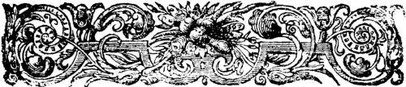
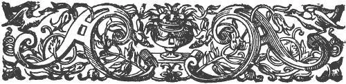

SotilezaPrimeras páginas
SOTILEZA
OBRAS COMPLETAS
DE
D. JOSÉ MARÍA DE PEREDA
OBRAS COMPLETAS
DE
D. JOSÉ M. DE PEREDA
de la Real Academia Española
Tomo IX
SOTILEZA
CUARTA EDICIÓN
MADRID
VIUDA É HIJOS DE MANUEL TELLO
1906
Es propiedad del autor.

Á
MIS CONTEMPORÁNEOS DE SANTANDER QUE AÚN VIVAN
Así Dios me salve como no he pensado en otros lectores que vosotros al escribir este libro. Y declarado esto, declarado queda, por ende, que á vuestros juicios le someto y que sólo con vuestro fallo me conformo.
Perdone, pues, la crítica oficiosa si, por esta vez, la pierdo el miedo. No se fatigue arrastrando el microscopio y metiendo las pinzas y el escalpelo entre las fibras de estas páginas; déjese, por Dios, de invocar nombres de extranjis para ver á qué obras y de quién de ellos y por dónde arrima mejor la estructura de la mía; no se canse en meterme por los ojos la medida que dan ciertos doctores de allende en el arte de presentar casos y cosas de la vida humana en los libros de imaginación; considere, una vez siquiera, que cada cual en su propia casa, siendo hacendosito y cuidadoso, puede arreglárselas con los recursos que tiene á mano, vivir tan guapamente y campar por sus respetos como el más runflante de sus vecinos, sin copiarle el modo de andar ni pedirle un real prestado, y entienda, por último, que este libro, de la misma veta que algún otro que llegó al mundo con muy buena suerte, y mucho antes de que en España se gastaran mares de tinta en encomiar modelos que ya apestan de tanto no venir al caso los encomios, es como es, no por parecerse á otros en su hechura, sino porque no puede ser de otra manera; porque al fin y á la postre, lo que en él acontece no es más que un pretexto para resucitar gentes, cosas y lugares que apenas existen ya, y reconstruir un pueblo, sepultado de la noche á la mañana, durante su patriarcal reposo, bajo la balumba de otras ideas y otras costumbres arrastradas hasta aquí por el torrente de una nueva y extraña civilización; porque ciertos toques y perfiles, que desde lejos pudieran parecer alardes de sectario de una escuela determinada, no son otra cosa que el jugo y la pimienta del guisado: lo que da el estudio del natural, no lo que se toma de los procedimientos de nadie; lo que pide la verdad dentro de los términos del arte, los cuales han de estar en la mente y en el corazón del artista y no en las cláusulas de los métodos de escribir novelas (que á estos fines iremos á parar extremando otro poquito la pasión por los modelos); porque lo que se busca, en una palabra, es que reaparezcan aquí aquellas generaciones con los mismos cuerpos y almas que tuvieron.
Y tratándose de esto, ¿á quién si no á vosotros, que las conocísteis vivas, he de conceder yo la necesaria competencia para declarar con acierto si es ó no su lengua la que en estas páginas se habla; si son ó no sus costumbres, sus leyes, sus vicios y sus virtudes, sus almas y sus cuerpos los que aquí se manifiestan? ¿Y quién, si no vosotros, podrá suplir con la memoria fiel lo que no puede representarse con la pluma: aquel acento en la dicción pausada, aquel gesto ceñudo sin encono, aquel ambiente salino en la persona, en la voz, en los ademanes y en el vestir desaliñado? Y si con todo esto que yo no puedo representar aquí, porque es empresa superior á las fuerzas humanas, y con lo que os doy representado, resultan completas, acabadas y vivas las figuras, ¿quién, si no vosotros, es capaz de conocerlo? Y si lo conocéis y lo declaráis así, ¿qué aplauso puede resonar al fin de mi tarea, que mejor me cure del espanto de haberla acometido?
Ved aquí por qué doy tanta importancia á vuestro fallo en la ocasión presente, y por qué, y á pesar del grandísimo respeto que yo tengo á la crítica y á sus fueros indiscutibles, he de atreverme esta vez á mirarla sereno cara á cara, por muy ceñuda que me la ponga.
Cierto que las obras de arte ofrecen, amén del aspecto indicado, otros muy principales también y cuya apreciación estética, por ser de sentimiento y no de seco raciocinio, cae bajo la jurisdicción de la crítica, por ignorante que sea en el asunto que haya inspirado la obra juzgada; pero si es cosa resuelta ya, á lo que parece, que en la novela que de seria presuma, no han de admitirse otros horizontes que aquéllos á que estén avezados los ojos de la buena sociedad, si no han de aceptarse como asuntos de importancia otros que los que giren y se desenvuelvan en los grandes centros urbanizados á la moderna; si la levita y el boudoir, y el banquero agiotista, y el político venal, y el joven docto en todas las ciencias, pero desdeñado de la fortuna; el majadero elegante, y el problema del adulterio, y el problema de la prostitución, y el de la virtud con caídas, y tantos otros problemas... y hasta los indecentes galanteos del chulo del Imperial, han de ser los temas obligados de la buena novela de costumbres, ¿cómo he de aspirar yo á la conquista del aplauso general y al veredicto de la crítica militante, con un cuadro de miserias y virtudes de un puñado de gentes desconocidas, con accesorios de poco más ó menos y fondos de la naturaleza, ya en su grandiosa tranquilidad, ya en sus cóleras desatadas?
Y vaya observando el lector distinguido y elegante, cómo, anticipándome á su fallo y acomodándome á su modo de ver y de sentir, confieso humildemente que no aspiro á escribir un libro al gusto de todos, con materiales sacados de las canteras de mi huerto; y cómo me voy aproximando á declarar, si se me aprieta un poco, que importa menos en una estatua la obra del escultor, que la nombradía del monte en que se arrancó la piedra.
Así, pues, y en virtud de esto y de lo otro y de todo lo demás que se entiende sin que yo lo puntualice, decidme vosotros cuando hayáis leído la última palabra de esta novela:—«Choca esos cinco, porque eres de nuestra calle...» y vengan penas después...
Y hasta puede que me atreviera entonces, con los alientos de ese aplauso, contando con que el público me niegue el suyo, á exclamar para mis adentros, puestos los ojos en las desdeñadas páginas del libro:
—Pues por más que ustedes digan, no es para todos la tarea de hinchar perros de esta catadura.
Santander, diciembre 1884.
J. M. de Pereda.
Postdata.—Al reimprimir esta novela, año y medio después de agotada la copiosa edición primera (marzo de 1885), lugar era éste bien á propósito, en mi entender, para decir yo cómo respondieron á la precedente dedicatoria los aludidos y hasta los no aludidos en ella; pero como la enumeración de los honores tributados á la humilde callealtera en tantas formas, desde tantas partes y por tantas y tan diversas gentes, pudiera traducirse por la malicia en pueril artificio de vanagloria, quédese, bien á pesar mío, esa cuenta sin ajustar en público, y válgales la advertencia á mis acreedores nobilísimos, por la más solemne declaración de lo muchísimo que les debo.
Junio de 1888.
J. M. de P.

I
CRISÁLIDAS
El cuarto era angosto, bajo de techo y triste de luz; negreaban á partes las paredes, que habían sido blancas, y un espeso tapiz de roña, empedernida casi, cubría las carcomidas tablas del suelo. Contenía una mesa de pino, un derrengado sillón de vaqueta y tres sillas desvencijadas; un crucifijo con un ramo de laurel seco, dos estampas de la Pasión y un rosario de Jerusalén, en las paredes; un tintero de cuerno con pluma de ave, un viejo breviario muy recosido, una carpetilla de badana negra, un calendario y una palmatoria de hoja de lata, encima de la mesa; y, por último, un paraguas de mahón azul con corva empuñadura de asta, en uno de los rincones más obscuros. El cuarto tenía también una alcoba, en cuyo fondo, y por los resquicios que dejaba abiertos una cortinilla de indiana, que no alcanzaba á tapar la menguada puerta, se entreveía una pobre cama, y sobre ella un manteo y un sombrero de teja.
Entre la mesa, las sillas y el paraguas, que llenaban lo mejor de la estancia, y media docena de criaturas haraposas, que arrimadas á la pared, ó aplastando las narices contra la vidriera, ó descoyuntadas entre dos sillas y la mesa, ocupaban casi el resto, trataba de pasearse, con grandísimas dificultades, un cura de sotana remendada, zapatillas de cintos negros y gorro de terciopelo raído. Era alto, algo encorvado, con los ojos demasiado tiernos, de lo cual, por horror á la luz, era obra la encorvadura del cuello; y tenía un poco abultada y rubicunda la nariz, gruesos los labios, áspero y moreno el cutis y negra la dentadura.
Entre todos aquellos granujas no había señal de zapato ni una camisa completa; los seis iban descalzos, y la mitad de ellos no tenían camisa. Alguno envolvía todo su pellejo en un macizo y remendado chaquetón de su padre; pocos llevaban las perneras cabales: el que tenía calzones no tenía chaqueta, y lo único en que iban todos acordes era en la cara sucia, el pelo hecho un bardal y las pantorrillas roñosas y con cabras. El mayor de ellos tendría diez años. Apestaban á perrera.
—Vamos á ver—dijo el cura, dando un coquetazo al del chaquetón, que se entretenía en resobar las narices contra los vidrios del balcón, el cual muchacho era morrudo, cobrizo, bizco y de cabeza descomunal,—¿quién dijo el Credo?
Se volvió el rapaz, después de largar un hilo sutil de saliva á la vidriera por entre dos de sus incisivos, y respondió, encogiéndose de hombros:
—¡Qué sé yo?
—Y ¿por qué no lo sabes, animalejo? ¿Para qué vienes aquí? ¿Cuántas veces te he repetido que los apóstoles? Pero ab asino, lanam... ¿Cuántos Dioses hay?...
—¿Dioses?—repitió el interpelado cruzando los brazos atrás, con lo que vino á quedar en cueros vivos por delante; porque el chaquetón no tenía botones, ni ojales en que prenderlos aunque los hubiera tenido. Reparó el cura en ello y dijo, echando mano á las solapas y cruzando la una sobre la otra:
—¡Tapa esas inmundicias, puerco!... ¿Y los botones?
—No los tengo.
—Los habrás jugado al bote.
—Tenía una escota y la perdí esta mañana.
El cura fué á la mesa y sacó del cajón un bramante, con el que á duras penas logró sujetar las dos remendadas delanteras del chaquetón, de modo que taparan las carnes del muchacho. En seguida le repitió la pregunta:
—¿Cuántos Dioses hay?
—Pues habrá—respondió el interpelado, volviendo á cruzar los brazos atrás,—á todo tirar, ocho ó nueve.
—¡Resurge de profundis!... ¡Ánimas benditas, qué pedazo de animal!... Y personas ¿cuántas?
Miró el bizco, á su manera, de hito en hito, al cura, que también le miraba á él como podía, y respondió, con todas las señales de estar poseído de la mayor curiosidad:
—¡Personas!... ¿Qué son personas, usté?
—¡San Apolinar bendito!—exclamó el sencillo clérigo haciéndose cruces,—¿con que no sabes qué son personas... lo que es una persona!... Pues ¿qué eres tú?
—¿Yo?... Yo soy Muergo.
—Ni tanto siquiera, porque los hay en la playa con más entendimiento que tú... ¿Qué son personas?—repitió el cura, encarándose con el muchacho que seguía á Muergo por la derecha, también descamisado, pero con calzones, aunque escasos y malos, menos feo que Muergo y no tan bronco de voz.
Este muchacho, no sabiendo qué responder, miró al más inmediato, el cual miró al que le seguía; y todos fueron mirándose unos á otros, con las mismas dudas pintadas en la cara.
—¿De modo—exclamó entonces el cura, volviendo á encararse con el que seguía á Muergo,—que tampoco sabes qué eres tú?
—¡Eso sí, corflis!—respondió el muchacho, creyendo ver una salida franca para sus apuros.
—Pues ¿qué eres?
—Surbia.
—¡Eso te diera yo para que reventaras, animal!
—Y tú ¿qué eres?—añadió el cura, dirigiéndose á otro, de media camisa, pero sin chaqueta y muy poco pantalón.
—Yo soy Sula,—respondió el interpelado, que era rubio y delgadito, por lo cual descollaba en él, más que en el fondo tostado de sus camaradas, la roña de las carnes.
De esta manera, y tratando de responder á la misma pregunta, fueron diciendo sus motes los otros tres muchachos que había en el cuarto, ó séanse Cole, Guarín y Toletes. Acaso ninguno de ellos conocía su propio nombre de pila.
El cura, que los tenía bien estudiados, no acabó de perder la paciencia por eso. Los descerrajó cuatro improperios y media docena de latines, y después les dijo en santa calma:
—Pero la culpa me tengo yo, que me empeño en varear el árbol, sabiendo que no puede soltar más que bellotas. El que menos de vosotros lleva dos meses asistiendo á esta casa... ¿Á qué, santo nombre de Dios!... Y ¿por qué, Virgen María de las Misericordias!... Pues porque el padre Apolinar es un bragazas que se cae de bueno.
«Pae Polinar, que este hijo está, fuera del alma, hecho una bestia; pae Polinar, que este otro es una cabra montuna... pae Polinar, que esta condenada criatura me quita la vida á disgustos; que yo no puedo cuidar de él; que en la escuela de balde no le hacen maldito el caso... que éste, que el otro, que arriba, que abajo; que usté que lo entiende y para eso fué nacido... que enséñele, que dómele, que desásnele...» Y tres que me ofrecen y cuatro que yo busco, cata la casa llena de muchachos; y aguanta su peste, y explica y machaca... y cébalos para que vuelvan al día siguiente, porque yo sé lo que sucediera de otro modo... y hazlo todo de buena gana, porque esa es tu obligación, pues eres lo que eres, sacerdos Domini nostri Jesuchristi, por lo cual digo con Él: sinite pueros venire ad me; dejad que los niños se acerquen á mí... y ríase usted de la vecina de abajo, y del padre de éste, y de la madre del de más allá, que murmuran y corren y propalan que si salís de mis manos más burros de lo que vinísteis á ellas, como salieron otros muchos que vinieron á mí antes que vosotros... ¡Linguæ corruptæ, carne mísera y concupiscente!... Ríase usted de eso, como yo me río, porque debo reirme... Pero vosotros, alcornoques, más que alcornoques, ¿qué hacéis para corresponder á los esfuerzos del padre Apolinar? ¿Cómo estamos de silabario al cabo de dos meses?... ¡Ni la O, cuerno, ni la O se conoce en estas aulas si os la pinto en la pared! Pues de doctrina cristiana, á la vista está... Y como no quiero enfadarme, aunque motivos había para echaros uno á uno por el balcón abajo... vamos á otra cosa, y alabado sea Dios per omnia sæcula sæculorum, que lo demás es chanfaina.
Tras este desahogo, pasó fray Apolinar, sin dejar de pasearse, casi en redondo, con las manos cruzadas atrás, á lo que él llamaba lo llano y de todos los días: á preguntar á los granujas las oraciones más usuales y sencillas, para que no las olvidaran; lo único que había logrado meterles en la cabeza, aunque no bien ni del todo. Muergo no necesitó remolque más que tres veces en el Ave María; Cole dijo tal cual el Padre nuestro, y el que mejor sabía el Credo, entre todos ellos, no pasó, sin apuntador, del «su único Hijo.»
En vista de lo cual, fray Apolinar no le dió á Sula más que media galleta dulce; un botón del provincial de Laredo á Toletes, y un higo paso á Guarín.
—Del lobo un pelo, hijos—les dijo en seguida el pobre exclaustrado;—otra vez será menos... y peor. Y ahora... ¡hospa, canalla!... Pero aguárdate un poco, Muergo.
Los muchachos, que ya se disponían á salir, se detuvieron. Y dijo el fraile á Muergo, alzándole las haldillas del chaquetón:
—Esto no puede continuar así. Sin camisa, cuando hay chaqueta, vaya con Dios; pero sin calzones... ¿Á dónde han ido á parar los tuyos?
—Los puso antier mi madre á secar en las Higueras,—respondió Muergo á tropezones.
—¿Y no han secado todavía, hombre de Dios?
—Los royó una vaca, mientras mi madre destripaba una merluza que agolía mal.
—¡Castigo de Dios, Muergo; castigo de Dios!—dijo fray Apolinar rascándose el cogote.—Las merluzas que huelen mal, porque están podridas, se tiran á la mar, y no se limpian lejos de las gentes para vendérselas después, á medio precio, á los pobres como yo, que tienen buenas tragaderas. Pero ¿no quedó nada de los calzones, hombre?
—La culera—respondió Muergo,—y esa, en banda.
—Poco es—repuso el exclaustrado, revolviéndose dentro de su ropa, movimiento que era muy habitual en él.—¿Y no hay otros en casa?
—No, señor.
—¿Ni barruntos de dónde puedan venir?
—No, señor.
—¡Cuerno con el hinojo!... Pues así no puedes continuar, porque aun cuando te sobra paño para envolverte, á lo mejor se rompe la driza; tú no reparas en ello, y, si reparas, lo mismo te da... De modo que lo de siempre, hijo, lo de siempre: tú, que no puedes, llévame á cuestas, padre Apolinar. ¿No es eso? ¿No es la purísima verdad? ¡Cuerno si lo es!
Muergo se encogió de hombros, y fray Apolinar se metió en la alcoba. Oyósele pujar allá dentro y murmurar entre dientes algunos latinajos; y no tardó en aparecer, alzando la cortina, con un envoltorio negro entre manos, el cual puso en seguida en las de Muergo.
—No son cosa mayor—le dijo;—pero, al fin, son calzones. Dile á tu madre que te los arregle como pueda, y que no los ponga á secar en las Higueras cuando tenga que lavarlos; y si le parecen poco todavía, que se consuele con saber que á la hora presente no los tiene mejores, ni tantos como tú, el padre Apolinar... Con que, ¡vira, canalla, por avante!
Otra vez se revolvió el concurso, gruñendo y respingando como piara de cerdos que huelen el cocino al salir de la pocilga, y se pintaba en todos los roñosos semblantes el ansia de llegar á la escalera para examinar la dádiva de fray Apolinar, la cual conservaba aún el calorcillo que le había chocado á Muergo en ella al entregársela el pobre exclaustrado, cuando se abrió la puerta y se presentaron en el cuarto dos nuevos personajes. El uno era un muchacho frescote, rollizo, de ojos negros, pelo abundante, lustroso y revuelto; boca risueña, redonda barbilla, y dientes y color de una salud de bronce: representaba doce años de edad, y vestía como los hijos de «los señores.»
Traía de la mano á una muchachuela pobre, mucho más baja que él, delgadita, pálida, algo aguileña, el pelo tirando á rubio, dura de entrecejo y valiente de mirada. Iba descalza de pie y pierna, y no llevaba sobre sus carnes, blancas y limpias, en cuanto de ellas iba al descubierto, más que un corto refajo de estameña, ya viejo, ceñido á la flexible cintura sobre una camisita demasiado trabajada por el uso, pero no desgarrada ni pringosa, cualidades que se echaban de ver también en el refajo. Hay criaturas que son limpias necesariamente y sin darse cuenta de ello, lo mismo que les sucede á los gatos. Y no se tache de inadecuada la comparación, pues había algo de este animalejo en lo gracioso de las líneas, en el pisar blando y seguro, y en el continente receloso y arisco de la muchachuela.
En cuanto la vió Muergo, se echó á reir como un estúpido; Cole soltó un taco de los gordos, y Sula otro de los medianos. La recién llegada remedó á Muergo con una risotada falsa, poniendo la cara muy fea, sin hacer caso maldito de los otros dos granujas, ni del mismo padre Apolinar, que alumbró un coquetazo á cada uno de los tres.
—¿Á qué vienen esas risotadas, bestia, y esas palabrotas sucias, puercos?—dijo el fraile mientras largaba los coscorrones.
—Es la callealtera... ¡ju, ju, ju!—respondió Muergo rascándose el cogote machacado por los nudillos de fray Apolinar.
—La conocemos nusotros,—expuso Cole, palpándose la greña.
—Que de poco se ajuega, si no es por Muergo,—añadió Sula.
Muergo volvió á reirse estúpidamente, y la muchacha tornó á hacerle burla.
—¿Y por eso te ríes, ganso?—dijo el fraile, largándole otro coquetazo.—¡Pues el lance es de reir!
—Es callealtera...—repitió Cole,—y estaba hiciendo barquín-barcón en una percha que anadaba en la Maruca... Yo y Sula estábamos allí tirándola piedras desde la orilla. Dimpués, allegó Muergo... la acertó con un troncho, y se fué al agua de cabeza.
—¿Quién?—preguntó el fraile.
—Ella—respondió Cole.—Yo pensé que se ajuegaba, porque se iba diendo á pique... Y Muergo se reía.
—Y yo—saltó Sula,—le dije: «¡Chapla, Muergo, tú que anadas bien, y sácala, porque se está ajuegando!» Y entonces se echó al agua y la sacó. Dempués, la ponimos quilla arriba; y á golpes en la espalda, largó por la boca el agua que había embarcao.
—Y eso ¿es verdad, muchacha?—preguntó á ésta el exclaustrado.
—Sí, señor,—respondió la interpelada, sin dejar de remedar á Muergo, que volvió á reir como un idiota.
—Corriente—dijo el exclaustrado.—Pero ¿á qué vienes aquí, y á qué vienes tú, Andresillo, y por qué la traes de la mano? ¿En qué bodegón habéis comido juntos, y qué pito voy á tocar yo en estas aventuras?
—Es callealtera,—respondió muy serio el llamado Andresillo.
—Ya me voy enterando, ¡cuerno!—Tres veces con ésta se me lo ha dicho ya. Y ¿qué hay con eso?
—La conozco del Muelle-Anaos—continuó Andrés.—Baja casi todos los días allá.—Yo no sabía lo de la Maruca... ¡que si lo sé! (y enderezó á Muergo un gestecillo avinagrado), porque también conozco á éstos.
—¿Del Muelle-Anaos?—preguntó fray Apolinar, sin pizca de asombro.
—Sí, señor—respondió Andrés.—Van muy á menudo.
—Y él á la Maruca,—añadió Guarín.
—¡Cuerno con el rapaz, y qué veta saca!... Pero vamos al caso. Resulta, hasta ahora, que esta niña es callealtera, y que tú y esta granujería, á pesar de las respectivas vitolas, sois... tal para cual... ¿Y qué más?
—Que esta mañana avisó á mi madre el talayero que quedaba á la vista la Montañesa... y yo salí de casa para ir á San Martín á verla entrar... y llegué al Muelle-Anaos.
—¡Al Muelle-Anaos!... ¿No vivís ya en la calle de San Francisco?
—Sí, señor.
—¡Pues buen camino llevabas para ir á San Martín!
—Iba á ver si estaba allí Cuco y me quería acompañar.
—¡Cuco! ¿También eres amigo de Cuco, de ese raquerazo descortés y grosero, que me canta coplas indecentes en cuanto me columbra de lejos?... ¡Cuerno con la cría!
—Yo nunca le oigo esas cosas... Malo, algo malo es; pero no hace daño á nadie. Anda en el bote del Castrejo, y me enseña á remar, y á echar coles y tapas, y á descansar de espaldas y de pie...
—Sí, y á birlar los puros á tu padre para regalárselos á él; y á correr la escuela, y á andar en las guerras... y á muchas cosas más que me callo... ¡Pues buenas tripas se le pondrían á tu padre si al entrar hoy con la corbeta te veía en las peñas de San Martín en compañía de tan ilustre camarada! ¡Cuerno, recuerno del hinojo!
Andrés se puso muy colorado, y dijo, con la cabeza algo gacha:
—No, señor... Yo no hago nada de eso, pae Polinar.
—¡Como que te vas á confesar conmigo ahora!...—repuso el fraile con mucha sorna.—Pero ¡á mí de esas cosas, Andresillo?... En fin, ya hablaremos de esto en mejor ocasión. Ahora, sigue con el cuento. ¿Qué te dijo Cuco en el Muelle-Anaos?
—Á Cuco no le ví, porque andaba de flete con unos señores. Pero estaba ésta comiendo un zoquete de pan que le habían dado, de pura lástima, unos calafates, y me dijo que había dormido anoche en una barquía, porque la habían echado de casa.
Hasta aquí las primeras páginas. Para seguir leyendo, descarga el libro completo, gratis:
¿Cuál elegir? El PDF se abre directo en el navegador, en cualquier celular o computador. El EPUB queda en Descargas y se lee con una aplicación de lectura (Google Play Libros en Android, Libros en iPhone, Kindle o Kobo), que deja agrandar la letra.